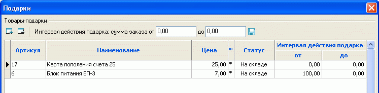
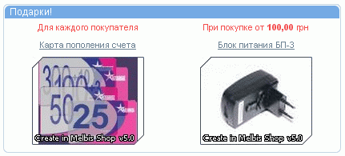
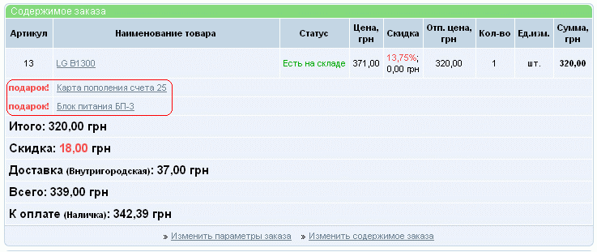

Для стимулирования интереса к интернет-магазину и увеличения продаж может использоваться система подарков. Подарок назначается в зависимости от интервала, в который попадает сумма покупки. Составление списка таких товаров и определение условий вручения подарков производится вызовом из главного меню "Товары - Особые - Подарки" окна назначения подарков. Подарком может быть любой имеющийся товар, однако при его использовании в качестве подарка его стоимость не учитывается.

Указание для суммы заказа значения "0,00" в окне "до" интервала действия подарка равносильно указанию бесконечно большого значения. Так, в данном примере при покупке товаров на любую сумму будет добавляться "Карта пополнения счета 25", а при покупке свыше 100,00 - "Блок питания БП-3". Условия применения подарков отображаются на первой странице:

Товары-подарки автоматически добавляются в заказ:
